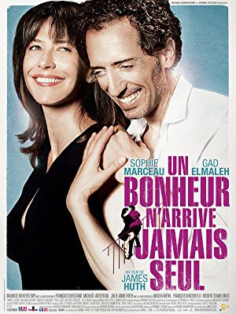
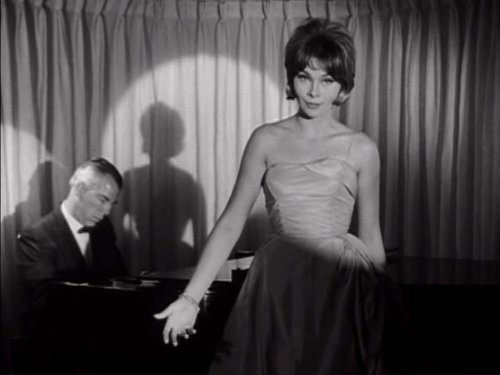

#8560 Und nebenbei das große Glück
 
 IMDB-Wertung: 6.5 / 10
IMDB-Wertung: 6.5 / 10  Metascore: 0
Metascore: 0 
Sacha loves his friends, his piano and partying. At night, he plays in a jazz club and seduces pretty girls. He lives for the moment, looking for pleasure. No alarm clock, no engagement, no taxes. Charlotte has three kids, two ex-husbands and a thriving professional life. She has no room for a love story. They have nothing in common. They shouldn't be together... They're made for one another.
Jahr: 2012
Dauer: 109 Minuten
FSK:
Land: Frankreich Studio: Senator FilmTonspuren:
Untertitel:
Auflösung: 1080p (1792x1080) Größe: 8130 MB
Genre: Komödie, Liebe
Regisseur: James Huth
Drehbuch: James Huth
Soundtrack: Bruno Coulais
Darsteller:
 Gad Elmaleh als Sacha Keller
Gad Elmaleh als Sacha Keller Sophie Marceau als Charlotte Posche
Sophie Marceau als Charlotte Posche- Maurice Barthélémy als Laurent Helewa
 François Berléand als Alain Posche
François Berléand als Alain Posche Michaël Abiteboul als Lionel Ronssin
Michaël Abiteboul als Lionel Ronssin- Julie-Anne Roth als Chris Tamalet
-  Macha Méril als Fanfan Keller
- Robert Charlebois als Jean-Seb Bigstone
- Audrey Looten als Assistante Charlotte
- Jack Lang als Le ministre de la culture
- Shauna Pinkett als Amie de Cynthia
- Christophe Yves als Danseur
- Bérénice Marlohe als Laurent's date (uncredited)
- Litzi Vezsi als Mamie Matzü
- Cyril Gueï als Xavier Sabi
- François Vincentelli als César Renaudeau
- Valérie Crouzet als Cécile Monet
- Dina Capistrano Nietes als Minerva Cea, dite Nana
- Milena Chiron als Suzy
- Timothé Gauron als Louis
- Timéo Leloup als Léonard
- Vincent Deniard als Nicolas l'artiste
- Armando Gamberini als Vincenzo d'Il Barone
- Anne-Sophie Boubals als Coralie Léger de Lourdes
- Jérôme Seydoux als Professeur Deloële
- Clara Bonnet als Irène, la stagiaire
- Xavier Pottier als Romain, le boucher
- Pierre-Yves Plat als Bruno Vaneau
- Nathalie Guizol als Administratrice Théâtre Mogador
- Paule Coudert als Administratrice
- André Dlugosz als Le plombier
- Régis R. als Régis l'artiste
- Muriel Corbel als La chorégraphe
- Jean-Claude Hadida als Iszak
- Manesca De Ternay als La femme au cerf
- Philippe Bardy als Directeur marketing
- Pascal Decolland als Second Posche
- Aleksandra Klebanska als Marieke, hollandaise
- Jess Bennett als Cynthia, américaine
- Jensen Samoo als Laurent Échaubard
- Shannon Renaudeau Shillito als Léa, assistante Xavier
- Emmanuel Tamalet als Créatif agence pub
- Jean-Philippe Clément als Créatif agence pub
- Marion Chevrier als Stagiaire agence pub
- Geoffrey Bateman als Bill, administrateur
- Michel Bouis als Coureur
- Laurent Helewa als Client Vincenzo
- Stefan Golden als Jogger US
- Guillaume Dolmans als Pawel
- Sacha Prijovic als Concierge Charlotte
Datei: X:\2012(N-Z)\Und nebenbei das große Glück (2012, FSK, 1792x1080).mkv seit 22.03.2018
Festplatte: HD 2012(N-Z)-2013(A-H)
 Es gibt insgesamt 138 Filme in der Gruppe '2012(N-Z)'
Es gibt insgesamt 138 Filme in der Gruppe '2012(N-Z)'